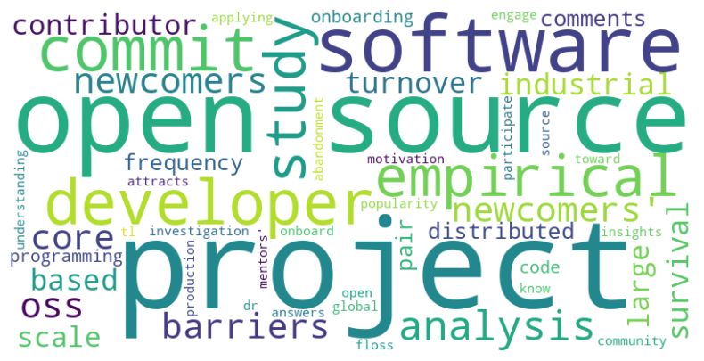

Topical Association
WordCloud Generated from Keywords of the Articles
All the analyzed articles
ReACT driven articles
WordCloud Generated from Title of the Articles
All the analyzed articles

ReACT driven articles